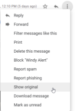

Delivery Status Notifications
Delivery Status Notifications (DSNs)These are email messages that notify us than an email message can not be delivered like when we send send incorrectly addressed emails(e.g.: wrongAddress@target.com) to a organization.
Because these DSNs could contain useful informations if it falls within the scope of the penetration test we should do that during the reconnaissance phase
In google gmail:
Three dots(More) → Show Original
From here we can check if there are useful informations